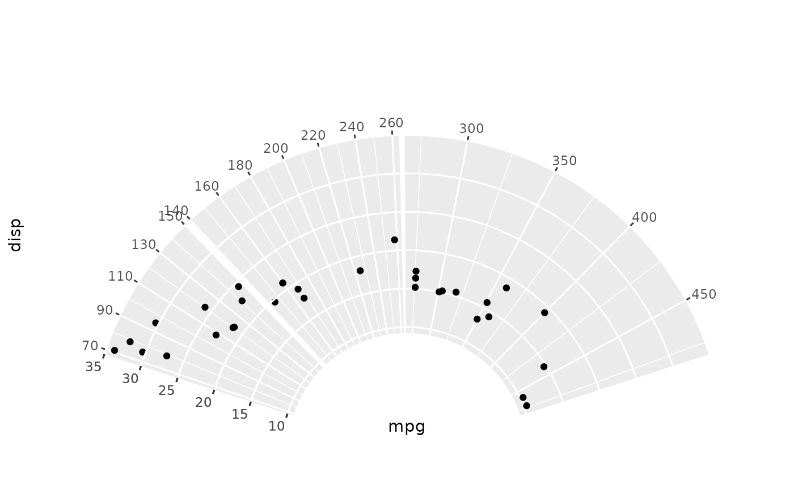

Draw each panel in a sector of the polar coordinate.
Arguments
- facets
A set of variables or expressions quoted by
vars()and defining faceting groups on the rows or columns dimension. The variables can be named (the names are passed tolabeller).For compatibility with the classic interface, can also be a formula or character vector. Use either a one sided formula,
~a + b, or a character vector,c("a", "b").- radial
A Polar Coord created by
coord_circle().- spacing_theta
The size of spacing between different panel. A numeric of the radians or a
rel()object.- drop
If
TRUE, the default, all factor levels not used in the data will automatically be dropped. IfFALSE, all factor levels will be shown, regardless of whether or not they appear in the data.
Examples
ggplot(mtcars, aes(disp, mpg)) +
geom_point() +
facet_sector(
vars(cyl),
coord_circle(
start = -0.4 * pi, end = 0.4 * pi, inner.radius = 0.3,
outer.radius = 0.8, expand = TRUE
)
)
